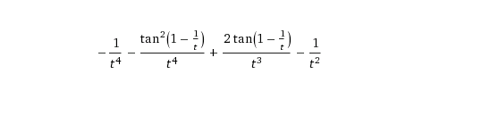
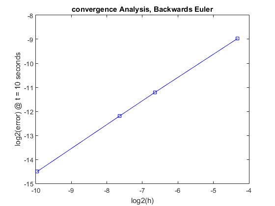
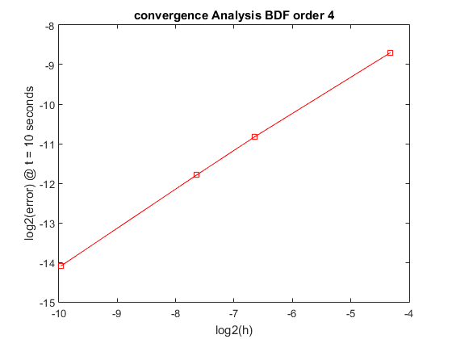
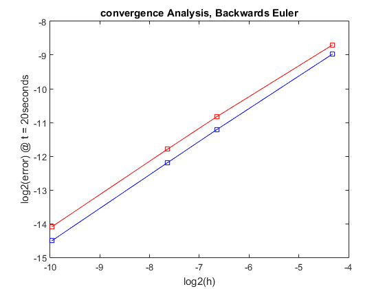

Contents
%Author: Alex Dawson-Elli %project: ME 751 hw 7 %date 10.28.2016
problem 3 forward Euler to solve an IVP
theoretically ,we define the region of stability for forward euler as abs(1+h*lambda)< 1. This fell out of the definition of forward euler and the condition that the numerical solution of the decaying exponential mirror the behavior of the analyitcal solution, in that y_n+1 < y_n
%using the above inequality, it follow that the theoretical regions of %stability for the three values of lambda are: % lambda = -10 -> 0<h<.2 % lambda = -100 -> 0<h<.02 % lambda = -1000 -> 0<h<.002 %The bondries of instability for each value of lambda will be demonstrated %numerically below %constants and function definitions h_step = .0001; %1/1000 sec time step t_end = 2; %final time, 2 seconds (arbitrary choice) y0 = 1; lambdaVect = [-10, -100, -1000]; txt = 'largest stable value of h'; stable = true; y_n = y0; y_np1 = 0; %n plus one %solution for i = 1:3 %find h_max for each lambda , i stable = true; %display previous h_max h_step = .0001; %rest h_step while(stable)%incrementally increase h step until instability y_n = y0; y_np1 = 0; for t = h_step:h_step:t_end; %numerically solve first 2 seconds y_np1 = y_n + h_step*lambdaVect(i)*y_n; % check if system is stable if(abs(y_np1) > abs(y_n)) stable = false; h_max =h_step; end %perform next itteration y_n = y_np1; end %increase h_step incrementally to find where unstable h_step = h_step + .0001; %disp(h_step) end display(lambdaVect(i)); disp(h_max); end
ans =
-10
0.2001
ans =
-100
0.0201
ans =
-1000
0.0020
as can be seen above, the numerical solutions agree nicely with the theoretical solutions calculated earlier
problem 4 Backwards Euler
we are asked to apply backwards Euler to solve the IVP over the interval 0<t<20. Backwards Euler is defined itteratively as xn = x_n-1 + h*xdotn. it offeres the advantage over forward Euler of being stable, for greater h step sizes, at the expense of solving a non-linear equation at each itterative step.
%constants: alpha = 0; beta = 1; epsilon =.0001; %accuracy requirements of newton rapson h = .01; %step size in seconds %initial conditions: x0 = 0; y0 = 2; Y_nm1 = [x0 , y0]'; %2x1 vector %function definitions xdot = @(x,y) alpha - x - 4*x*y/(1+x^2); ydot = @(x,y) beta*x*(1- y/(1+ x^2)); %plot variables: t = 0:.01:20; xt = zeros(length(t),1); yt = zeros(length(t),1); %solve for y and x over the period 0<t<20, with step h i = 1; %loop counter for t = h:h:20 %start:step:stop %use forward euler to generate first guess of Y_n x = Y_nm1(1); %x_nm1 in more readable form y = Y_nm1(2); %y_nm1 in more readable form Y_n = [ x + h*xdot(x,y) , y + h*ydot(x,y) ]'; %set delta large delta = [1,1]; %newton rapson iterations -> J*delta = -G while(norm(delta) > epsilon) % 2x1 2x2 2x1 delta = (NR.J(h,Y_n,beta))^-1 * -NR.G(h,Y_nm1,Y_n,alpha, beta); Y_n = Y_n + delta; end % append values to plot variables xt(i) = Y_n(1); yt(i) = Y_n(2); i = i + 1; %increment y Y_nm1 = Y_n; end %plot x,y,t % plot(t,xt); % hold on; % plot(t,yt); %at the supplied initial conditions, the values for xdot and ydot evaluate %to zero. because of this, the value of the function Y_n doesn't change as %we advance time, which makes the solution uninteresting. I could have a %bug in the code, but I'm not seeing it at the moment, and it does appear %that xdot and ydot evaluate to zero given the initial conditions, which %would lead to X_np1 = xn.
problem 5
%in problem 5, we are given a first order differential equation, and asked %to solve it using backwards Euler, and BDF %a) prove that y(t) = 1/t + 1/t^2*tan((1/t + pi -1)) %solution: if y(t) is the exact solution to the IVP, then y(1)=1, and the %derivative of y(t) will equal ydot: % plugging t = 1 into y(t) results in 1 + 1*tan(pi) = 1 + 0 = 1, which % checks out %taking the derivative of y, we get the following expression for ydot imshow('ydot.png'); %this is equivalent to the value of -y^2 - 1/t^4, if we substitute in %tan^2(theta) = 1 + sec^2(theta) imshow('ysqrd.png'); %b)generate a convergence plot using backwards euler
%constants: h = [.05 .01 .005 .001]; %decreasing values of h tStart =1; %sec tEnd = 10; %sec epsilon =.0001; %initial conditions: y1 = 1; y_n = y1; %function definitions y_ana = @(t) 1/t + 1/t^2*(tan(1/t + pi -1)); %analytical expression for y ydot = @(y,t) -y^2 - 1/t^4; jac = @(y_np1,h) 1 + 2*y_np1*h; %jacobian g = @ (y_np1,y_n,h,t) y_np1 - y_n + h*(y_np1^2 + 1/t^4); for i = 1:length(h); %reset initial conditions y_n = y1; %plot variables: tVect = tStart:h(i):tEnd; yt = zeros(length(tVect),1); j = 1; %plot counter for t = tStart:h(i):tEnd %start:step:stop %use forward euler to generate first guess of Y_n y_np1 = y_n + h(i)*ydot(y_n,t); %set delta large delta = 1; %newton rapson iterations -> J*delta = -G while(delta > epsilon) % 1x1 1 1x1 delta = jac(y_np1,h(i))^-1 * -g(y_np1,y_n,h(i),t + h(i)); y_np1 = y_np1 + delta; end % append values to plot variables yt(j) = y_np1; j = j + 1; %increment y y_n = y_np1; end %store difference between final numerical and analytical solution error1(i) = abs(y_ana(t) - y_n); % %plot x,y,t % hold on % plot(tVect,yt); % title('numerical approximations of decreasing step size h') end figure; plot(log2(h),log2(error1), '-bs'); title('convergence Analysis, Backwards Euler') xlabel('log2(h)') ylabel('log2(error) @ t = 10 seconds')
C) generate a convergence plot for an order 4 BDF which approximates the
%solution of the above IVP %BDF co-efficients: A = [48/25 -36/25 16/25 -3/25]; %alpha values B = [12/25]; %beta values %constants: h = [.05 .01 .005 .001]; %decreasing values of h tStart =1; %sec tEnd = 10; %sec epsilon =.0001; %initial conditions: y1 = 1; %functions y_ana = @(t) 1/t + 1/t^2*(tan(1/t + pi -1)); %analytical expression for y ydot = @(y_n,t) -y_n^2 - 1/t^4; jac = @(y_n,h) 1 + h*12/25*2*y_n; %jacobian = d/dy_n(g) g = @(y,h,t,n) y(n) - A(1)*y(n-1) - A(2)*y(n-2) - A(3)*y(n-3) - A(4)*y(n-4) - B*h*ydot(y(n), t); for i = 1:length(h); %reset initial conditions and plot variables tVect = tStart:h(i):tEnd; y = zeros(length(tVect),1); j = 1; %plot counter n = 5; %5th time step tstart = tStart + n * h(i); %start BDF at 5th time step %use the analytical solution to prime the BDF method for ind = 1:4 y(ind) = y_ana(tStart + (ind - 1)*h(i)); end for t = tstart:h(i):tEnd %start:step:stop %use forward euler to generate first guess of Y_n y(n) = A(1)*y(n-1) + A(2)*y(n-2) + A(3)*y(n-3) + A(4)*y(n-4) + B*h(i)*ydot(y(n-1),(t - h(i))); %set delta large delta = 0; %newton rapson iterations -> J*delta = -G while(abs(delta) > epsilon) % 1x1 1 1x1 delta = jac(y(n),h(i))^-1 * -g(y,h(i),t,n); y(n)= y(n) + delta; end %increment n n = n + 1; end %store difference between (4th)from final numerical and analytical solution error2(i) = abs(y_ana(t -4*h(i)) - y(n-4)); % %plot x,y,t % hold on % plot(tVect,y); % title('numerical approximations of decreasing step size h') end %figure; plot(log2(h),log2(error2), '-rs'); title('convergence Analysis BDF order 4') xlabel('log2(h)') ylabel('log2(error) @ t = 10 seconds')
compare BDF order 4 to Backwards Euler
%by inspection, the BDF of order 4 seems to have less error at the same %step size the slopes seem to converging, like the lines will cross at high %step size plot(log2(h),log2(error2), '-rs'); title('convergence Analysis BDF order 4') xlabel('log2(h)') ylabel('log2(error) @ t = 10 seconds') hold on plot(log2(h),log2(error1), '-bs'); title('convergence Analysis, Backwards Euler') xlabel('log2(h)') ylabel('log2(error) @ t = 20seconds')